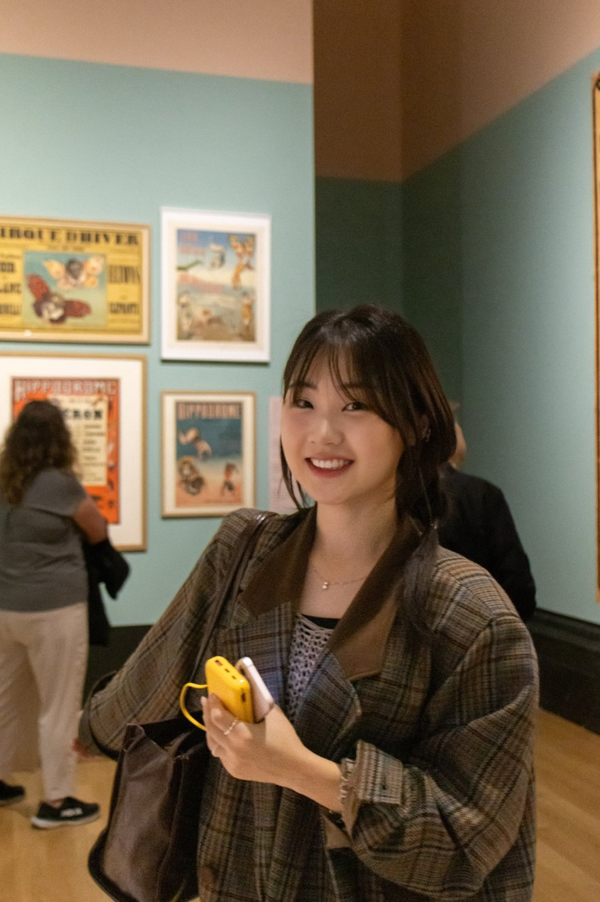

Sieun Kim
HCI Researcher · M.S. in Industrial Design, KAIST (DxD Lab, advised by Prof. Hwajung Hong)
My research focuses on designing responsible Human-AI interaction that aligns socioaffective human values. I am specifically interested in the societal and psychological impact of AI. Grounded in my interdisciplinary background in psychotherapy, software engineering, digital mental health, and industrial design, I investigate how to align AI systems with diverse human values and emotional needs — before irreversible risks occur.
Research
How does the use of AI shape users psychologically and socially — especially for emotionally vulnerable users?
Beyond a tool: how can humans and AI companions coexist in a healthy way?
What must we consider to design AI that has a socially and psychologically healthy impact?
Publications
Conference & Journal Papers
Posters & Workshop Papers
More
Projects Research projects spanning AI safety, AI companions, and digital mental health. →Education
Thesis: Who Stays and Who Leaves? Understanding Initial Social Chatbot Engagement through Emotional and Relational Experiences